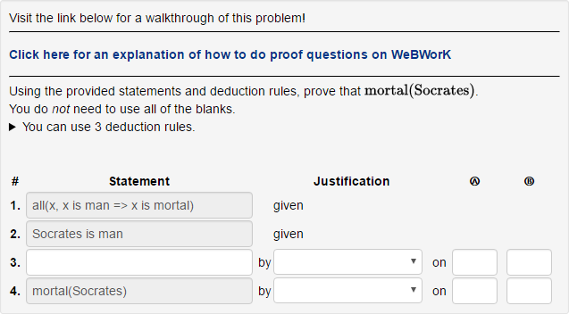
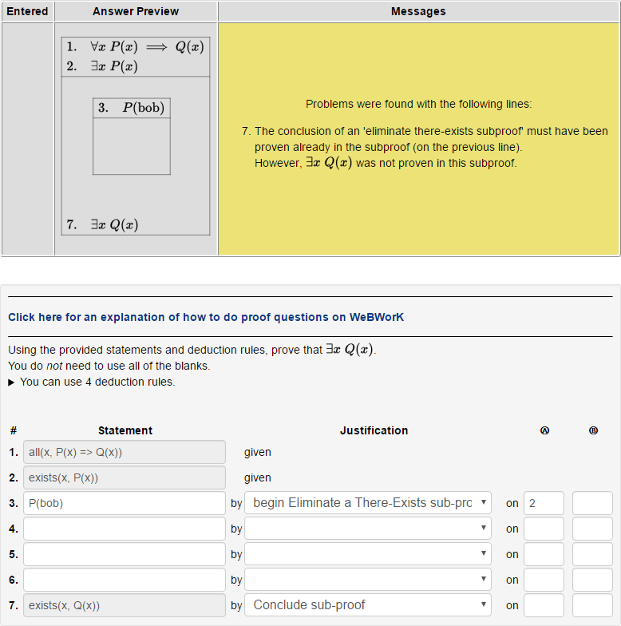

Starred lines give directions or hints for the tutorial problems.
Struck-through text indicates that
a feature is not (yet) available.
Read the tutorial for a walkthrough of how to solve the first two tutorial questions.
Skip to the quick reference for a guide of how to use specific notations and deduciton rules.
A proof question on WeBWorK asks you to formally show that some statement is true.
A proof-question gives you several pieces of information:
For a proof question, you must write a series of statements which logically follow from the given statements that end with the specified conclusion.
Each line in the proof is made up of several parts:
WeBWorK verifies that each line in your proof correctly follows from the lines before it. When you click "Preview My Answers" or "Check Answers", WeBWorK will point out any problems in your proof.
The checker is very pedantic. It requires
you to write proofs that skip no steps.
Something as simple as x+y being replaced with
y+x needs a line in your proof.
There are multiple ways to type some statements. You can use whichever one you prefer, though the ones with more parentheses might be helpful if WeBWorK is having trouble understanding you.
It is probably easiest to first sketch the solution out on paper. Once you have the basic outline planned on paper, then try to enter the proof one line at a time.
You can click "Preview My Answers" at any time to get feedback on the proof you've written so far. Getting your proof accepted one line at a time will make fixing typos and logic errors less frustrating.
Let's use the proof checker to check the famous syllogism,
All men are mortal.
Socrates is a man.
Therefore, Socrates is mortal.
First, this has to be written in a more formal notation.
Predicates like x is mortal
are typically written as mortal(x) in math.
WeBWorK allows you to write predicates in any of the three ways:
x is a mortal
x is mortal
mortal(x)
All three forms are equivalent. You can use whichever you prefer.
To express a concept like "a man is a mortal", we have to
state it as an implication (if ... then ...).
You can use
if ... then ... or=> to create
implications.
For example, "a man is a mortal" might be written as either
if x is a man then x is a mortalx is a man => x is a mortal
General statements like those involving the words all or any must be stated explicitly using quantifiers.
Quantifiers can be written like predicates; they can also be
written without .
()
For example, "everyone loves icecream" might be written as any of the following:
forall(x, loves(x, icecream))
all(x, loves(x, icecream))
forall x loves(x, icecream)all x loves(x, icecream)Here is how the problem would be presented to you in WeBWorK.
This is the first exercise assigned to you; you can follow along!

You can recognize that we want to use
x is a man => x is a mortal
together with the fact that Socrates is a man.
The deduction rule that allows us to use A => B and
A
together to conclude B is called
modus ponens.
The conclusion, Socrates is mortal is already entered
for you in line 4.
Click "Preview My Answers" to see what WeBWorK wants you to do.
WeBWorK will tell you that you need to include a justification for each line in the proof.
Try using modus ponens from the dropdown as the justification for line 4.

WeBWorK asks you to tell it what previous lines this new line is referring to.
Modus Ponens requires an implication P => Q
for the Ⓐ column. A statement similar to 1 might work.
Modus Ponens also needs the corresponding P statement.
Line 2 might work in this case.
Try entering 1 for Ⓐ and 2 for Ⓑ in justification for the 4th line.

WeBWorK rejects this attempt because line 1 is actually a quantified implication, but modus ponens requires a bare implication.
Sorry, but the computer is pedantic. We need to get
a statement that looks exactly like
man(Socrates) => mortal(Socrates) in order to use it with
man(Socrates). The extra forall x, ... gets
in the way of modus-ponens.
We can conclude the bare implication
Socrates is man => Socrates is mortal
using line 1 by the
Eliminate a For-All deduction rule.
This conclusion can go into the blanks on line 3.
Use the "Eliminate a For-All" deduction rule on line 1 to justify
Socrates is man => Socrates is mortal on line 3.
Make sure to fix the modus-ponens line to refer to the correct previous lines. WeBWorK error messages will give hints.

You can submit your correct proof!
Being this careful can help you avoid writing incorrect proofs. Taking smaller steps can help you avoid logical fallacies and other pitfalls that WeBWorK will reject. However, writing proofs in this way is not easy.
Sometimes in proofs we need something that looks like this:
Suppose that p/q = √2 and p is not divisible by q.
Then, p2/q2 = 2.This is a contradiction; therefore √2 must be irrational.
Thus p2 = 2q2.
So, p2 is divisible by 2, so p is divisible by 2.
Also, q2 is divisible by 2, so q is divisble by 2.
We begin by supposing something that is not (necessarily) true, and then use that supposition to conclude other facts.
You cannot directly use the facts you simply "suppose" to be true to finish your proof. For example, this obviously incorrect proof:
Suppose that p/q = √2 and p is not divisible by q.
Therefore, since p/q=√2, √2 must be rational.
You can introduce a new claim or supposition, and conclude from that a limited number of statements. You can only use the claim while writing the subproof.
This is useful in order to create proofs that look like the following,
which introduces a P => Q statement:
Suppose it rained this morning.
Since when it rains, the grass is wet; thus the grass is wet nowTherefore, if it rained this morning, then the grass is wet.
The above, written slightly more carefuly, looks like:
Supposerained(today).ThusTherefore,grasswet(today).rained(today) => grasswet(today).
This section corresponds to the second tutorial WeBWorK problem.
In WeBWorK, subproofs can also be used to eliminate "there exists" quantifiers, by giving a name to the thing that exists:
1.forall n, P(n) => Q(n).
2.exists x, P(x).
3. Suppose that "x" is calledbob, i.e.,P(bob).4.7. ConcludeP(bob) => Q(bob)from (1.).
5.Q(bob)from (3.) and (4.).
6.exists x, Q(x)from (5.).
exists x, Q(x).
Note the unfortunate redundancy between lines (6.) and (7.).
Statement (6.) is deduced from statement (5.), which is still part of the subproof. Therefore (6.) must be part of the subproof.
However, we ultimately want to conclude (7.), so we must move it to be the conclusion of the subproof as well.
WeBWorK requires you to explain what kind of subproof you are writing. The above example eliminates a "there exists", so you should use "begin Eliminate a There-Exists Subproof".

The above is how you might begin the problem. Use the hints from WeBWorK and this section to finish this subproof problem.
a and b or a & b or a ^ b. Use your favorite!
Use "Create an And". Statements A and B can be used to deduce A & B
Use "Eliminate an And". The statement A & B can be used to deduce either A or B.
You can write "∀x P(x)" as forall(x, P(x)) or all(x, P(x)).
If you have a "general" statement, like P(x)
and x is a "free" variable, you can conclude all(x, P(x)).
A variable is not free if it's used in a claim or a given statement.
Usually, "eliminate a for-all statement" can be used to create free variables.
If you have a statement like all(x, P(x, x)) you can use
"Eliminate a For-All" to conclude any statement of the form
P(__, __), for example, P(u, u) or P(3, 3).
You can write "∃x P(x)" as thereis(x, P(x)) or exists(x, P(x)) or exist(x, P(x)).